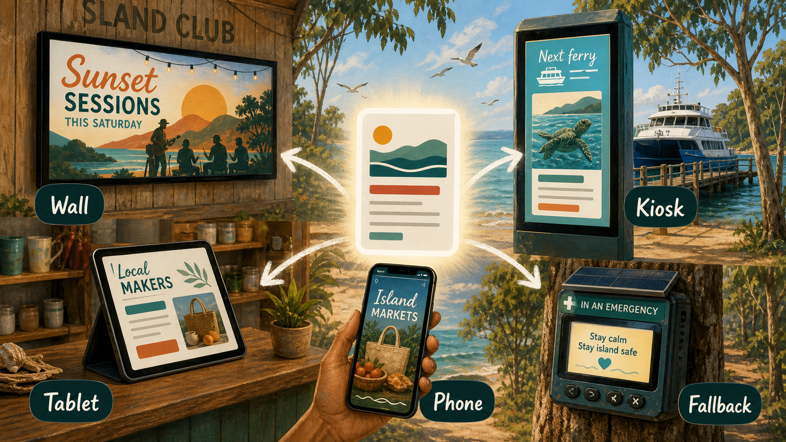

Ordinary door
Come in through the problem you already recognise: ferry pressure, food, housing, health, events, support, language, music or local trust.
Start with the world you already know
A collection of windows and doors into plausible worlds we can start building from now. Pick an ordinary starting point: food, music, grants, law, notices, care, travel, AI memory, sport, markets or disaster resilience. Each moonshot gives that starting point a practical door, a public prototype where one exists, and a wilder view of what the world could become.
How to read it
Every moonshot here should earn its place. It begins with a lived pressure, points to a small test or repo where possible, then names the wilder future it is trying to make visible.
Come in through the problem you already recognise: ferry pressure, food, housing, health, events, support, language, music or local trust.
Look for the small thing that can be tried now: a page, form, dashboard, map, grant shell, public noticeboard or fictional sample.
Ask what changes if the small thing works, connects with other projects, and becomes part of a larger civic imagination.
Anything touching Country, culture, privacy, money, law, health or infrastructure still needs the right people, evidence and consent.
Public media spine
The wall, tablet, phone, kiosk and emergency fallback are not decoration. They show how a moonshot can begin as ordinary local media, then quietly become markets, music, ferry help, maker discovery, visitor guidance and disaster resilience.

Connected shelf
Mineral Moonshots sits as Sample World 08 on the public Strange But True shelf, but it now behaves more like a live collection: public links where they are ready, private workbench boundaries where they are not, and a clear path back into the broader repo garden.
The public downloads shelf is the friendly front door where this site sits beside the other local and civic worlds.
Open downloads shelfA public-safe appreciation layer for people who choose visible support, with private records kept out of the display.
Open honour boardprofile.md is the public doorway. aura.md is the deeper private workshop for useful AI context and future planning.
Open profile.mdDreamtime marks the doorway into fiction and science fiction, with respect, consent and cultural caution made explicit.
Enter fictionStart here
This site is meant to be used from many starting points. Choose the card that feels closest to your world, then let it pull you one step further out.
Start with noticeboards, grants, kiosks, markets or safer access. These are the clearest public prototype doors.
Find practical doorsStart with I See Infinity, Strange But True and the fiction threshold. Let culture carry the future before the code catches up.
Enter the story doorStart with agent-ready markdown, Aura context, legal memory and the field library. The moonshot is better help with stronger boundaries.
Map the AI layerStart with food systems, health boundaries, consent, relationship futures and warm adult questions that stay privacy-first.
Open loving longevityGo to Kardashev, peaceful space, compute commons and subterranean civilisation. That is where the pressure test gets properly strange.
Open the moonshot doorRecent repo moonshots
These cards connect the public-facing moonshot view to the recent repo garden around it. Public repos link out directly. Private and local workbenches are named as boundaries, not as open promises.
Moonshot collection
Each card opens a separate experiment in world-view. Some start close to the ground, some start in science fiction, and some are bridges between the public repo garden and private thinking tools.
Material language
The mineral language is not just decoration. It reminds the collection that every future has chemistry, energy, labour, waste, beauty and responsibility inside it.
Try it
Start with something real: a market stall, a song release, a public notice, a health boundary, a grant, a ferry surge.
Follow the public repo if it is ready, or respect the private/local boundary if the work is still a workshop.
Use a dial, map, sorter or simulator to feel the system instead of only reading about it.
Name what needs consent, evidence, engineering, money, culture, law or community governance before it touches the real world.
Interactive lab
The brief pages include dials, maps, calculators, mode simulators and project constellations. They are thinking tools for visitors, not final engineering tools.
Working collection
A good visit should leave you with one repo to open, one moonshot to question, one boundary to respect and one practical next step to imagine.